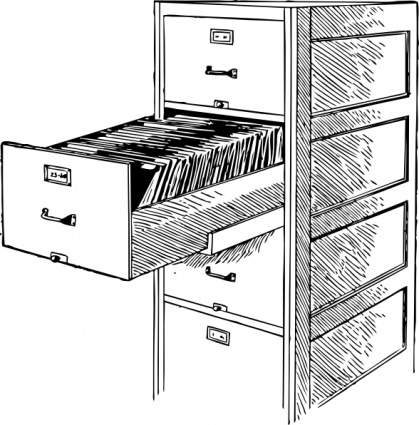

Goals
No Single Point of Failure
Some existing clustered filesystems have a single point of failure which can
take down the whole filesystem for many minutes at a time. Often this is the
metadata server, although not always. OneFish does not have a SPOF.
Petabyte Scale
OneFish is designed to work well on big computer clusters, especially
clusters running the Hadoop scalable
computing framework.
OneFish is designed to scale to many petabytes. You will not need to create
and manage a flock of smaller filesystems. Instead, you only need to manage
one filesystem.
Simple and Reliable
It's very important that a filesystem be as simple and reliable as possible.
Absolutely no code should be committed without thorough unit testing and
regression testing. It's also important to keep configuration knobs to a
minimum.
Native Performance
The filesystem ought to get as much performance as it can out of your
hardware.
Open Source
OneFish is our way of giving back to the open source community which has
given us so much great software over the years.
Non-goals
POSIX semantics
OneFish will not offer POSIX filesystem semantics, now or ever. There are
many great filesystems out there which do offer POSIX or near-POSIX
filesystem semantics, like Lustre
and Ceph.
In my opinion, POSIX filesystem semantics are most useful in a
traditional high-performance computing environment.
A lot of other popular filesystems, like NFS and HDFS, do not and never will
offer traditional POSIX semantics. This is a fundamental tradeoff and one
that I think we need to make to get acceptable peformance and lower code
complexity.
Wide Area Network Operation
OneFish is not designed to work over wide area networks (WANs) or in
environments with extremely high latency between nodes. For example, if your
nodes are connected together over home broadband connections, OneFish is not
the filesystem for you.
There are a lot of great filesystems out there which are designed for
distributed environments.
XtreemFS and
Tahoe-LAFS are just two examples.
Kernel Client
We're not interested in writing a kernel client for OneFish at the moment.